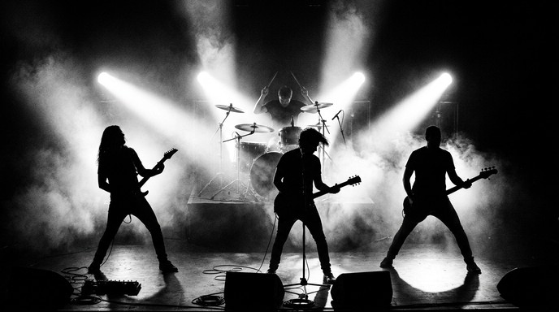

Conciertos de rock
Música en directo en el escenario principal para disfrutar de los sonidos clásicos del rock.

Festival de música rock vintage
San Bartolomé de Tirajana · 27 y 28 de noviembre de 2026
Esta primera edición del MaspaRock quiere reunir a todos esos amantes de la época dorada del rock, ya sean jóvenes o adultos y hacer que disfruten de una experiencia única al ritmo de la mejor música.
El festival se celebrará en el Parque del Sur, en San Bartolomé de Tirajana.
Conciertos de rock vintage en el escenario principal, mercadillo de ropa de época y accesorios, clases de baile de swing y un concurso de disfraces para demostrar si tienes el auténtico estilo Rockabilly.
Música en directo en el escenario principal para disfrutar de los sonidos clásicos del rock.

Aprende los mejores pasos de swing con nuestros profesores.

Demuestra tu estilo y gana premios en nuestro concurso de disfraces.
| Hora | Actividad | Escenario o lugar | Duración |
|---|---|---|---|
| 17:00 | Apertura del mercadillo | Zona del mercadillo | 4 horas |
| 18:00 | Clase de baile swing | Zona de baile | 1 hora |
| 20:00 | Concierto de rock vintage | Escenario principal | 1 hora y 30 minutos |
| Hora | Actividad | Escenario o lugar | Duración |
|---|---|---|---|
| 16:00 | Apertura del mercadillo | Zona del mercadillo | 5 horas |
| 18:00 | Concurso de disfraces rockabilly | Escenario principal | 1 hora |
| 20:00 | Concierto de rock vintage | Escenario principal | 1 hora y 30 minutos |